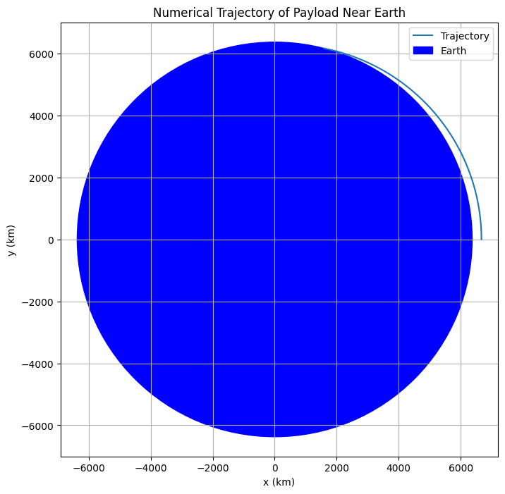
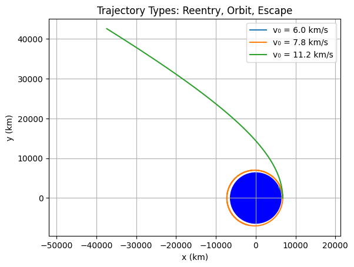
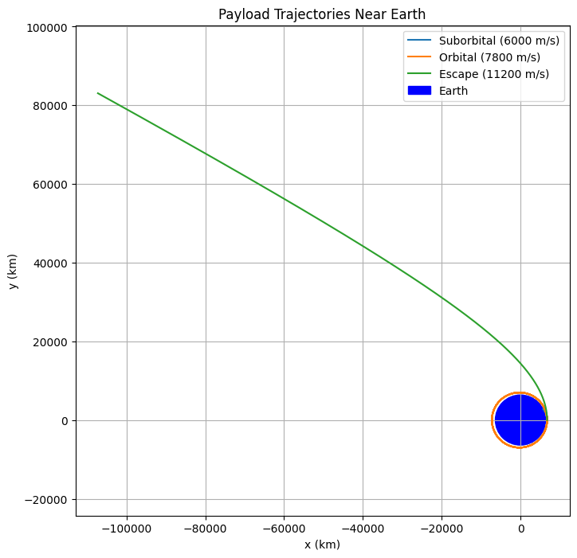

Problem 3
31.1 Newton's Law of Gravitation:
The gravitational force acting on an object near Earth is:
𝐹
𝐺 𝑀 𝑚 𝑟 2 F= r 2
GMm
Where:
𝐺 G is the gravitational constant ( 6.67430 × 10 − 11 m 3 kg − 1 s − 2 6.67430×10 −11 m 3 kg −1 s −2 ),
𝑀 M is Earth's mass ( 5.972 × 10 24 kg 5.972×10 24 kg),
𝑚 m is the payload mass,
𝑟 r is the distance from the Earth's center.
Conservation of Mechanical Energy:
The total mechanical energy (kinetic + potential) is conserved. The total energy 𝐸 E is given by:
𝐸
1 2 𝑚 𝑣 2 − 𝐺 𝑀 𝑚 𝑟 E= 2 1 mv 2 − r GMm
Where:
𝑣 v is the velocity of the object,
𝑟 r is the distance from Earth's center.
For Different Trajectories:
Parabolic Trajectory: The object has exactly enough energy to escape Earth's gravity and follow a parabolic path. The total energy 𝐸 = 0 E=0. Therefore, the initial velocity for a parabolic trajectory is:
1 2 𝑚 𝑣 2 = 𝐺 𝑀 𝑚 𝑟 2 1 mv 2 = r GMm
This means the object is launched at escape velocity but not with enough speed to form an elliptical or hyperbolic orbit.
Elliptical Trajectory: When the object’s total energy is negative ( 𝐸 < 0 E<0), it follows an elliptical orbit. The orbital energy for elliptical orbits is:
𝐸
− 𝐺 𝑀 𝑚 2 𝑎 E=− 2a GMm
Where 𝑎 a is the semi-major axis of the ellipse.
Hyperbolic Trajectory: When the object's total energy is positive ( 𝐸
0 E>0), it follows a hyperbolic trajectory and escapes Earth’s gravitational influence. The trajectory equation is:
𝐸
1 2 𝑚 𝑣 2 − 𝐺 𝑀 𝑚 𝑟 E= 2 1 mv 2 − r GMm
And the object is traveling fast enough to escape Earth's gravity.

3.1.2
Step 1: Mathematical Model We'll use Newton's Second Law and Law of Universal Gravitation:
Gravitational Acceleration:
𝑎
𝐺 𝑀 𝑟 2 a= r 2
GM
The object moves under this central force. So, using numerical integration (e.g., Runge-Kutta or Euler method), we can compute the path (trajectory) step-by-step.

3.1.3
Trajectory Types and Real Scenarios: 1. Suborbital / Reentry Trajectory Condition: Initial speed < orbital speed (~7.8 km/s at low Earth orbit)
Result: Payload follows an arc and eventually falls back to Earth
Example: Space tourism flights (e.g., Blue Origin)
- Circular or Elliptical Orbit (Orbital Insertion) Condition: Initial speed ~7.8 km/s (circular) or slightly higher (elliptical)
Result: Stable orbit if properly timed and angled
Example: Satellites and ISS missions
- Escape Trajectory (Hyperbolic) Condition: Initial speed > 11.2 km/s (Earth escape velocity)
Result: Payload leaves Earth’s gravitational influence
Example: Interplanetary probes like Voyager, Mars rovers
✈️ Application Summary:
Trajectory Type Required Speed (LEO) Real-World Use Suborbital < 7.8 km/s Space tourism, test rockets Orbital (Circular/Elliptical) ≈ 7.8 – 11.2 km/s Satellites, ISS missions Escape (Hyperbolic) > 11.2 km/s Interplanetary missions 
3.1.4
✅ Fundamental Equations (Formulas) Newton’s Law of Gravitation:
𝐹 ⃗ 𝑔 𝑟 𝑎 𝑣 𝑖 𝑡 𝑦 = − 𝐺 𝑀 𝑚 𝑟 2 𝑟 ^ F
gravity =− r 2
GMm
r ^
𝐺 G: gravitational constant
𝑀 M: mass of the Earth
𝑚 m: mass of the payload
𝑟 r: distance from Earth's center
𝑟 ^ r ^ : unit vector in the radial direction
The negative sign indicates the force is attractive.
Newton’s Second Law (F = ma):
𝑎 ⃗ = 𝐹 ⃗ 𝑚 = − 𝐺 𝑀 𝑟 3 𝑟 ⃗ a = m F
=− r 3
GM
r
This gives the acceleration vector acting on the payload.
Equations of motion (in 2D):
𝑑 2 𝑥 𝑑 𝑡 2 = − 𝐺 𝑀 𝑥 ( 𝑥 2 + 𝑦 2 ) 3 / 2 , 𝑑 2 𝑦 𝑑 𝑡 2 = − 𝐺 𝑀 𝑦 ( 𝑥 2 + 𝑦 2 ) 3 / 2 dt 2
d 2 x =− (x 2 +y 2 ) 3/2
GMx , dt 2
d 2 y =− (x 2 +y 2 ) 3/2
GMy
These differential equations are solved numerically in the Python code using a simple Euler integration method. 